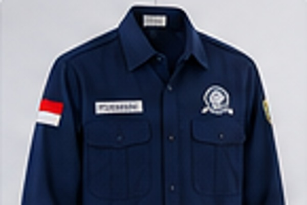
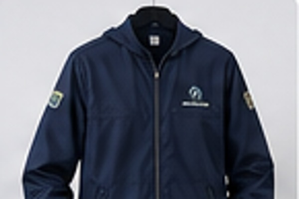
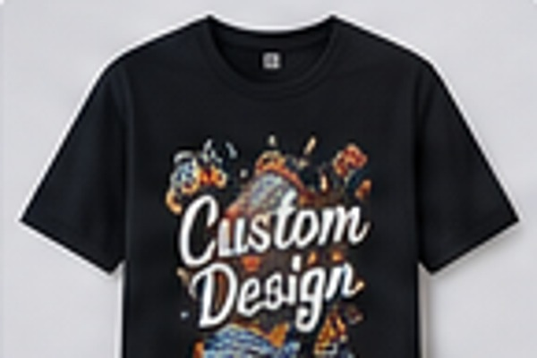
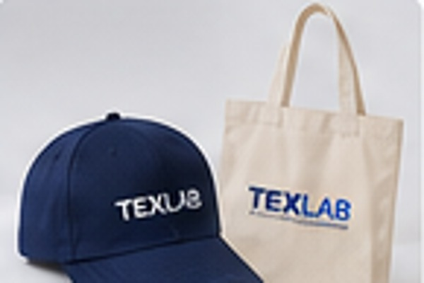

01 / LAB COAT
Jas Laboratorium
Oxford, American Drill, dan Nagata Drill, dilengkapi deskripsi bahan, referensi warna, serta size chart.
Lihat detail bahan ↗Pilih kategori produk untuk melihat pilihan material, karakteristik kain, referensi warna, dan panduan ukuran yang relevan. Setiap bahan dapat dikonsultasikan sebelum produksi.
Oxford, American Drill, dan Nagata Drill, dilengkapi deskripsi bahan, referensi warna, serta size chart.
Lihat detail bahan ↗
Referensi bahan drill dan ripstop untuk seragam organisasi, kerja, dan kegiatan lapangan.
Lihat detail bahan ↗
Referensi bahan Taslan, parasut, canvas, dan fleece serta pilihan warna umum.
Lihat detail bahan ↗
Cotton Combed, Cotton Carded, CVC, dan polyester dengan pilihan warna referensi.
Lihat detail bahan ↗
Lacoste Cotton Pique, CVC Pique, dan Polyester Pique untuk seragam tim dan perusahaan.
Lihat detail bahan ↗
Referensi material untuk topi custom dan goodie bag promosi atau merchandise.
Lihat detail bahan ↗Kirim jenis produk, jumlah pesanan, dan kebutuhan penggunaan melalui WhatsApp.